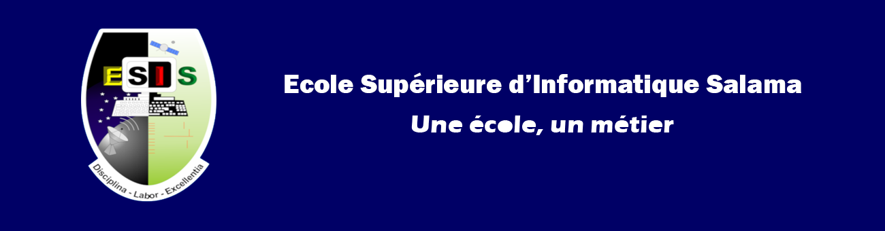

Lire l'actualité



Lire l'actualité
L’ESIS organise 2 cycles de formations selon le système LMD : le Graduat et le Master.Le graduat forme des ingénieurs techniciens de niveau BAC+3 dont le cycle de formation comprend l’année préparatoire et trois années de graduat. Le cycle de master des ingénieurs de niveau BAC+5 pour deux années de formation : master 1 et master 2.
Le cycle de graduat se structure sur 5 filières regroupées en 3 grandes familles :
- Génie Logiciel avec 2 options : Systèmes Informatiques et Gestion informatique
- Réseaux avec 2 options : Administration des Systèmes et Télécommunications
- Design et Multimédia
Au niveau du Master, les spécialisations sont :
- Génie logiciel
- Réseaux et mobilité
- Méthodes informatiques appliquées à la gestion des entreprises (MIAGE)
L’Ingénieur Logiciel ou l’Ingénieur Système a les compétences ci-après :
- Concepteur et développeur de n’importe quelle application
- Administrateur des bases de données
L’Ingénieur Logiciel ou l’Ingénieur Système doit pouvoir être capable de :
réaliser l’analyse et la conception d’un système d’informations ; concevoir et modéliser un logiciel ; développer un logiciel dans un langage approprié ; exploiter une base de données, quel que soit le système de gestion de celle-ci ; maîtriser différents langages de programmation afin de choisir celui qui est le plus approprié ; utiliser des technologies et outils récents, en programmation et modélisation ; gérer un projet informatique, notamment du point de vue de l’organisationL’Ingénieur Logiciel spécialisé dans la Gestion a les compétences ci-après :
- Analyste programmeur
- Manager des systèmes d’informations de gestion
L’Ingénieur Logiciel spécialisé dans la Gestion participe à la conception et au développement de logiciels de gestion. Il doit être capable de développer un logiciel de gestion dans tout domaine de la gestion (comptabilité, gestion des stocks, gestion des ressources humaines, etc.) ; utiliser des outils avancés dans la conception de logiciels de gestion ; exploiter un progiciel de gestion intégré ; conseiller sur l’emploi de logiciels de gestion.
L’ingénieur Administrateur Systèmes et Réseaux assure le bon fonctionnement technique du système informatique d’une entreprise par le conseil, la mise en place du nouveau matériel, la sécurité informatique et l’administration quotidienne du réseau.
L’ingénieur Administrateur Systèmes et Réseaux est capable de :
administrer des systèmes informatiques ; gérer le parc informatique d’une entreprise, allant de quelques
équipements à plusieurs centaines ; administrer des serveurs, notamment de bases de données ; assurer la
maintenance préventive, corrective et évolutive des équipements informatiques.
L’Ingénieur Télécoms et Réseaux a une connaissance des différents moyens de Télécommunications. Il intervient sur les différents équipements d’infrastructures et les terminaux des réseaux voix et données.
L’Ingénieur Télécoms et Réseaux est capable de :
comprendre le fonctionnement des réseaux téléphoniques analogiques et numériques ; administrer des
réseaux de téléphonie mobiles de toutes générations (GSM, GPRS, EDGE, UMTS…) ; concevoir et maintenir
des réseaux informatiques, ainsi que des réseaux Voix sur IP ; comprendre et mettre en place des
communications satellitaires ; maintenir et dépanner des réseaux (téléphonique & informatique).
L’Ingénieur en Design et Multimédia est concepteur dans les domaines suivants:
- infographie (création et traitement d’image, animation et graphisme);
- Publicité et marketing;
- maîtrise du multimédias (vidéo, audio, effet spéciaux);
- web design (interface graphique et administration de site);
- création d’identité visuelle et d'entreprise de service en création graphique.
L’Ingénieur en Design et Multimédia est capable de :
faire de la création d’image en s’adaptant à la demande ; concevoir un site web et le développer ; se
servir des outils informatiques à sa disposition (création/animation 2D et 3D) ; Réalisation et
traitement vidéo et audio ; créer des éléments interactifs (présentation d’entreprise, projet, logiciel)
offrir un support visuel à un projet environnemental, de construction ou d’aménagement
intérieur/extérieur (maquette et modélisation 3D).
Copyright © ESISALAMA 2022